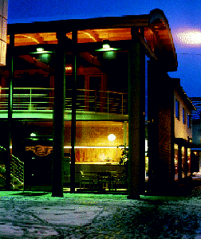

![[Forrige artikkel]](/me/ts/ne/gifs/prev.gif)
![[NE hjemmeside]](/me/ts/ne/gifs/ne-small.gif)
![[Neste artikkel]](/me/ts/ne/gifs/next.gif)
Av Wenche Aarseth
Tettstedet Bryne ligger i Time kommune en drøy halvtimes kjøretur fra Stavanger. Stedet har utviklet seg som "byen" på Jæren, og har 6000 innbyggere.
Som regionsavis ønsket Stavanger Aftenblad å markere sin tilstedeværelse på Jæren på en positiv måte. På Bryne ble det nye avishuset og servicekontoret sentralt plassert mellom den viktigste handlegaten og stedets stolthet: Mølledamsparken. En stor del av tomten som bygningen er plassert på, er lagt til en åpen plass med trappeanlegg. Bygningen åpner seg mot stedet og publikum, og eksponerer sin egenart som servicefunksjon.
Bygget har bærende yttervegger med skallmur av oker tegl. Gulvene i de to nedre etasjene er også av oker tegl. Taket er kobbertekket, og har konstruksjoner av laminerte furubuer. Himlingen er også av furu. Trebjelkene i gallerigolvet hviler på murveggene og en valset stålbjelke langs galleriforkanten. Inventar og innredninger forøvrig er av lys bøk. Malte overflater er hvite.
Deler av bygningsvolumet danner en arkade som inngår i plassen, og gir rom til en gangforbindelse mellom de to nivåene i Storgata og parken. Juryen ser det som prisverdig at prosjektet bidrar med en plass som forsterker forbindelsen mellom to av de viktigste særtrekkene i Bryne sentrum nemlig, parken og handlegata.
Juryen for Statens Byggeskikkpris 1995 bestod av sivilarkitekt Einar Dahle, sivilingeniør Per Christian Quale og juryleder Ellen S. Vibe.
Juryen vurderte 30 prosjekter, og besiktiget 14 av disse. Prisen gis til avishuset på Bryne grunnet dets innvendige og utvendige kvaliteter, forholdet til tomten den ligger på og forholdet til tettstedet det tilhører.
Kommunalminister Gunnar Berge stod for overrekkelsen av Byggeskikkprisen-95. Prisen er gitt til byggherren Stavanger Aftenblad og de fire arkitektene bak kontorbygget, Hoem, Kloster, Schelderup og Tonning (sivilarkitekter MNAL).
-Når vi tenker på byggeskikk tenker vi ofte på utformingen av enkeltbygg. Men enkeltbygg må forholde seg bevisst til stedet de er oppført på. Bryne sentrum består av sammensatte bygg både i alder og kvalitet. Byggherren må dermed være sitt ansvar bevisst i forhold til tettstedets sammensetning, sier juryleder Ellen S. Vibe, som til daglig er byplansjef i Skien.
I begrunnelsen vektlegger juryen den positive effekten avishuset har på tettstedet Bryne. Byggherren har lagt vekt på et kundevennlig avishus med en god markering på stedet. Videre har juryen vektlagt at arkitektene ikke har falt for fristelsen å kopiere eksisterende bygninger i nabolaget.
Huset har også en utformet fasade mot parken, slik at en unngår den typiske bakfasaden som mange av nabobygningene har. Fasaden er utført i tre etasjer, men er avtrappet i høyden slik at den ikke dominerer omgivelsene.
Bygget har en solid og materialmessig god utførelse som gir den et varig preg, heter det i juryens begrunnelse.
